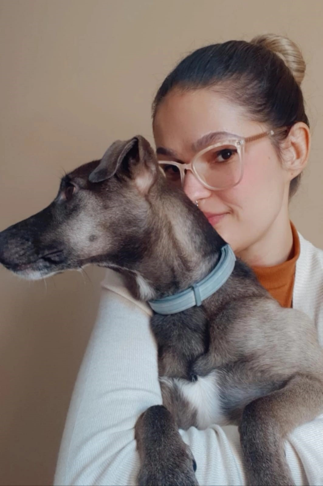

Patricia da Silva Martins
Hello, my name is Patricia, but my friends call me Paty; I am 30 years old and graduated recently in system analysis. I worked for two years as a software developer, but I have always been interested in the design field. I was searching for a design course, and I found Interactive Media design, where I could improve my skills as a software developer and learn about design. I am a dog person, and I enjoy going to the beach with my friends and cooking gluten-free foods.